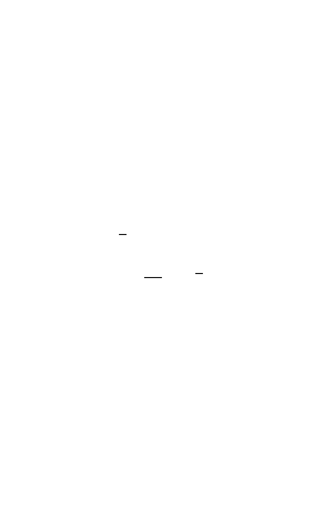

2.4 Simulating from Probability Distributions
45
where
j
! =
j
(
j
−
1)(
j
−
2)
· · ·
3
·
2
·
1, and by convention 0! = 1. It now follows
that the probability of observing
j
A
s is
P
(
N
=
j
) =
n
j
p
j
(1
−
p
)
n
−
j
, j
= 0
,
1
,
2
, . . . , n.
(2.17)
The probability distribution in (2.17) is known as the
binomial distri-
bution
with parameters
n
(the number of trials) and
p
(the probability of
success). The mean of
N
, which can also be calculated using (2.17) and (2.7),
is given in (2.10), and the variance of
N
is given in (2.15).
2.4 Simulating from Probability Distributions
To understand the behavior of random variables such as
N
, it is useful to
simulate a number of instances having the same probability distribution as
N
. If we could get our computer to output numbers
N
1
, N
2
, . . . , N
n
having
the same distribution as
N
, we could use them to study the properties of this
distribution. For example, we can use the sample mean
N
= (
N
1
+
N
2
+
· · ·
+
N
n
)
/n
(2.18)
to estimate the expected value
µ
of
N
. We could use the sample variance
s
2
=
1
n
−
1
n
i
=1
(
N
i
−
N
)
2
(2.19)
to estimate the variance
σ
2
of
N
, and we can use a histogram of the values of
N
1
, . . . , N
n
to estimate the probability of different outcomes for
N
.
To produce such a string of observations, we need to tell the computer
how to proceed. We need the computer to be able to generate a series of
random numbers that we can use to produce
N
1
, . . . , N
n
. This is achieved by
use of what are called
pseudo-random numbers
. Many programming languages
(and the statistical environment
R
we use in this book is no exception) have
available algorithms (or random number generators) that generate sequences
of random numbers
U
1
, U
2
, . . .
that behave as though they are independent
and identically distributed, have values in the unit interval (0
,
1), and satisfy,
for any interval (
a, b
) contained in (0
,
1),
P
(
a < U
1
≤
b
) =
b
−
a.
Random variables with this property are said to be
uniformly distributed on
(0
,
1). This last phrase captures formally what one understands intuitively:
any number between 0 and 1 is a possible outcome, and each is equally likely.
Uniform random numbers form the basis of our simulation methods. From
now on, we assume we have access to as many such
U
s as we need.